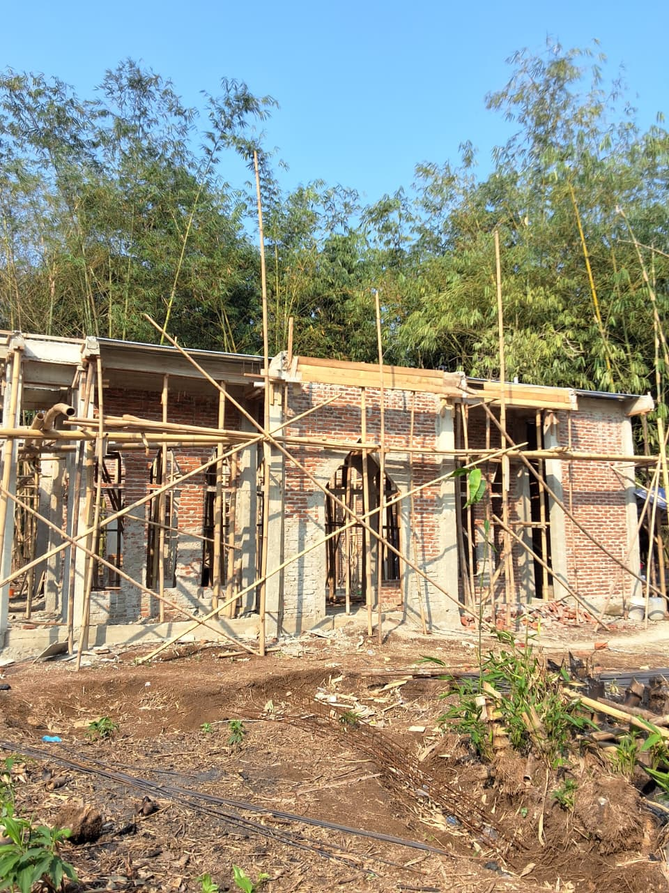

25 Agustus 2026Dinding Naik, Ring Balok Sudah Dicor
Foto terbaru dari lokasi. Struktur bangunan sudah terbaca utuh: dinding bata berdiri mengelilingi bangunan, kolom beton berdiri di tiap bentang, dan ring balok di atas dinding sudah selesai dicor. Bukaan pintu serta jendela lengkung sudah terbentuk sesuai desain.
- Dinding bata terpasang di seluruh keliling bangunan
- Kolom beton dan ring balok atas sudah dicor
- Bukaan pintu dan jendela lengkung sudah terbentuk
- Perancah bambu masih terpasang, pekerjaan rangka atap dan plester menyusul